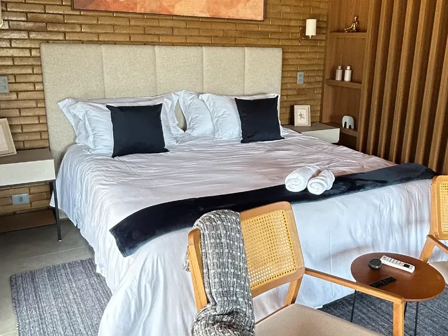
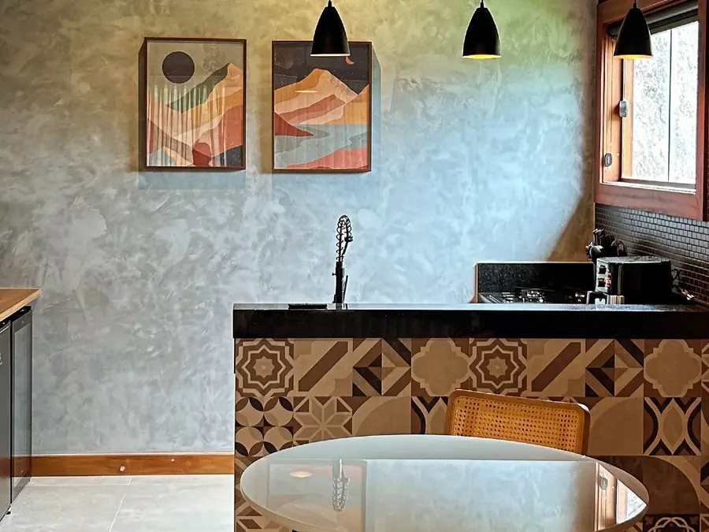
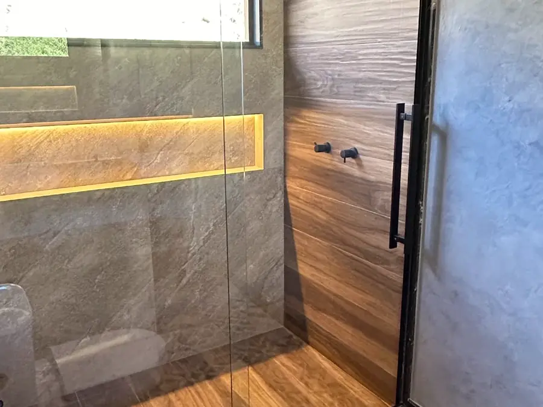
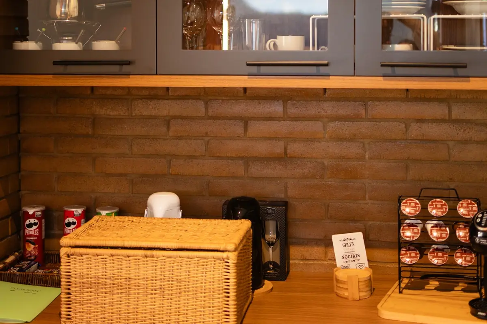
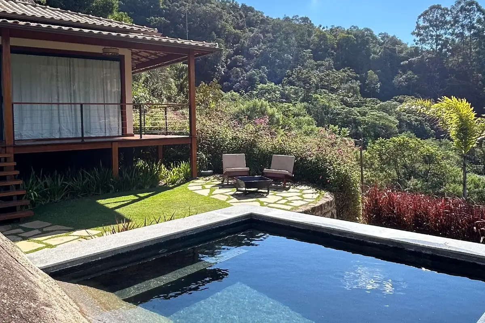
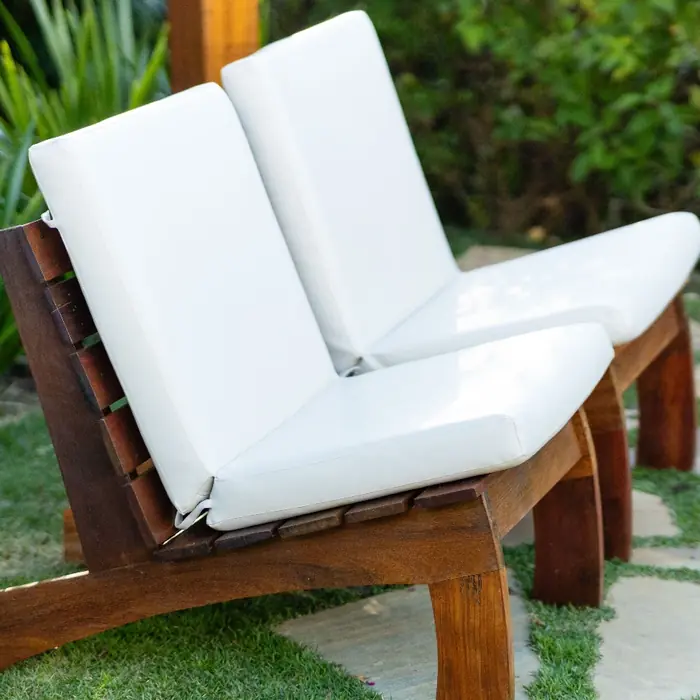

Cama king size
Enxoval de alto padrão 300 fios.

Hospedagem exclusiva em Petrópolis, pensada para casais que buscam paz, conforto e conexão com a natureza.
Reservar pelo WhatsApp5,0 no Google, 25 avaliações
Privacidade, sofisticação e um ambiente acolhedor, ideal para celebrações românticas, aniversários ou simplesmente para desacelerar da rotina.

Em meio às montanhas do Vale do BonfimO verde das montanhas, o canto dos pássaros e o silêncio da natureza preservada.

Piscina privativa aquecidaConvida ao banho a qualquer hora do dia, mesmo nos meses mais frios.

Jacuzzi interna com vista panorâmicaPara o casal relaxar enquanto aprecia o verde das montanhas.

Fogo de chãoUm vinho, uma tábua de frios e bons momentos sob o céu estrelado.

Cama king size com enxoval premiumAquecimento elétrico e roupões felpudos.

Ambiente 100% privativoUm refúgio para o casal, com check-in autônomo.
O interior do chalé revela ainda mais charme. Tudo foi planejado para oferecer conforto em cada detalhe.

Enxoval de alto padrão 300 fios.

Roupões, toalhas e amenities de banho.

Fogão, geladeira e itens básicos.

Banheiro espaçoso, com torneiras aquecidas.

Wi-fi e ar condicionado.

Arquitetura charmosa e design de interiores refinado.
Desde a chegada, o hóspede é acolhido com uma cesta de café da manhã personalizada e tem à disposição uma seleção de produtos locais à venda, como vinhos, chocolates e delícias artesanais.




Uma experiência sensorial e emocional que começa no cuidado com a recepção e se estende até o último momento da estadia.